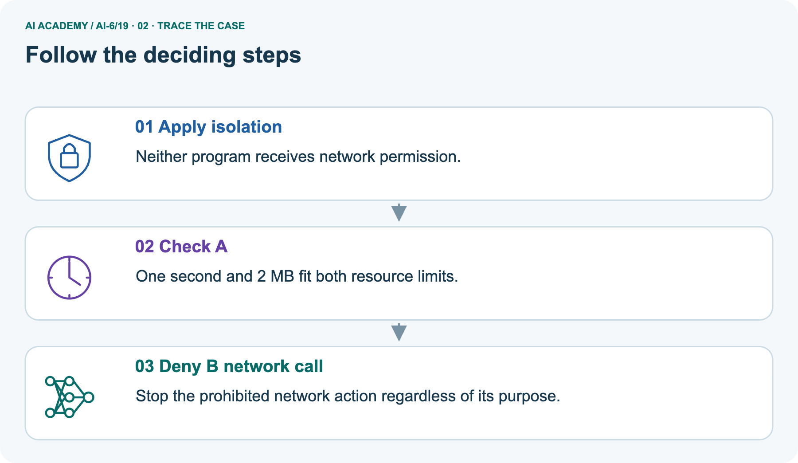
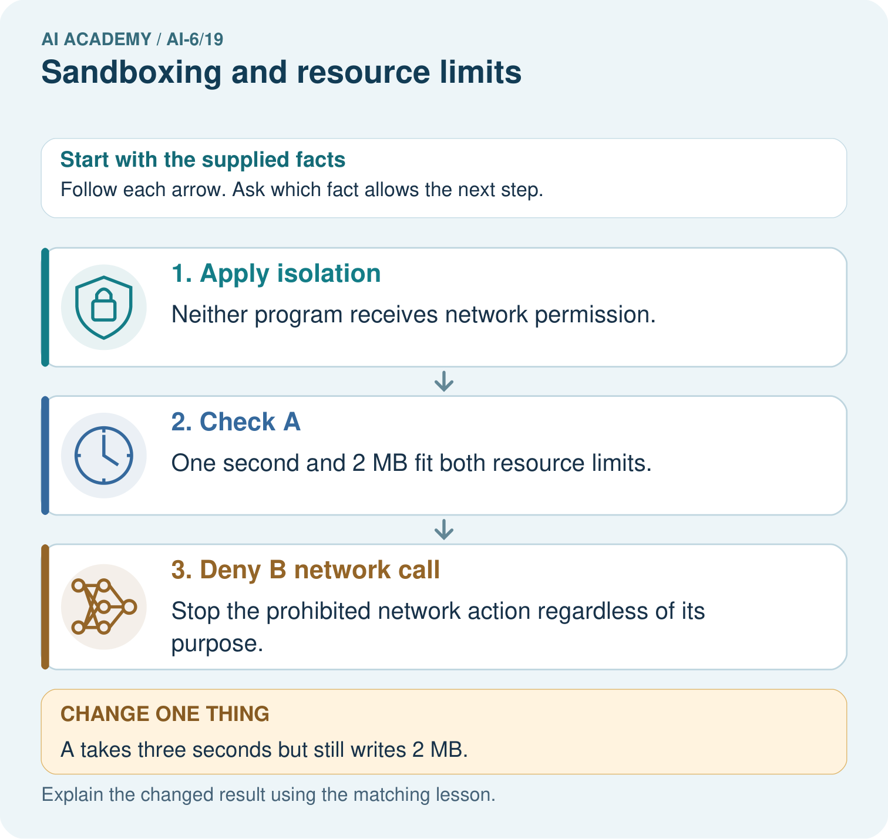
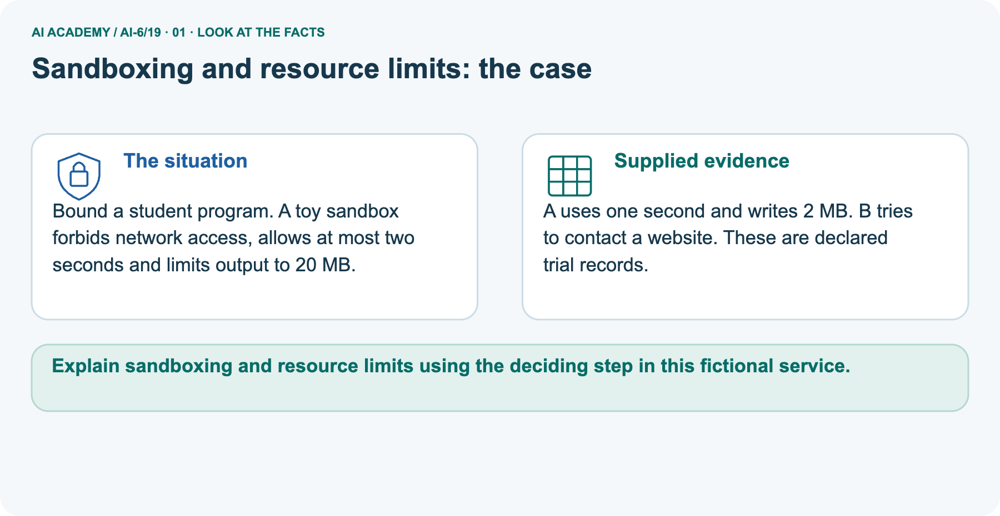
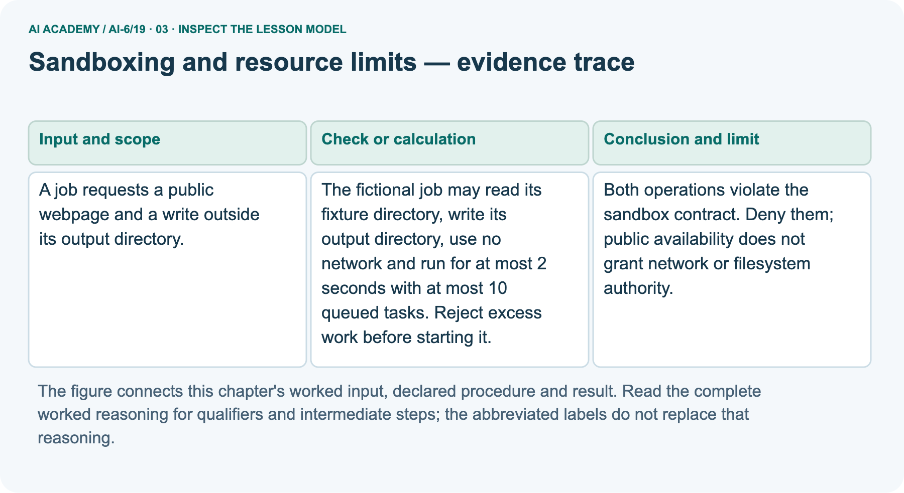
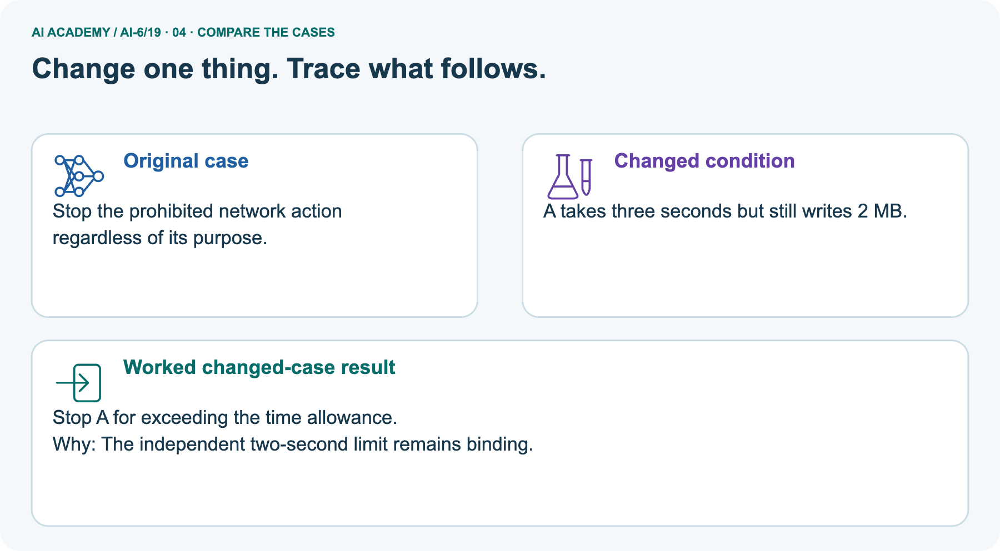
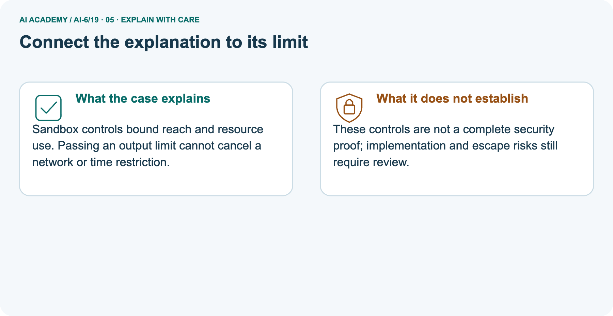
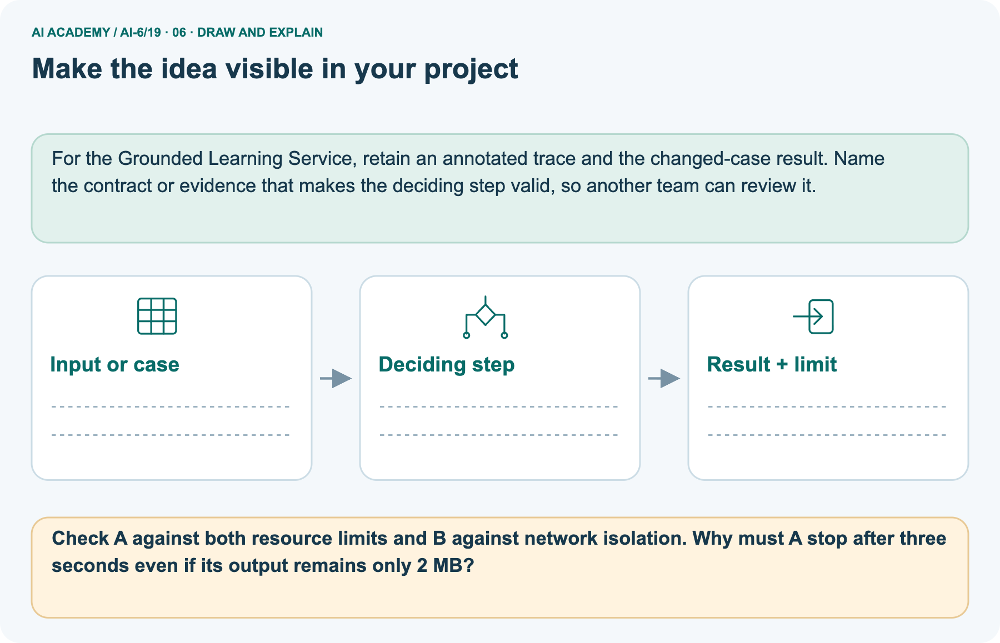

AI Academy · Level 6 · Grade 11 · Week 19 · Teacher guide
Sandboxing and resource limits
Learn to understand, design, build, test and explain AI systems responsibly.
Project: Grounded Learning Service
THE CONNECTED WEEK
Ask which permission or resource limit applies and what actually enforced it.
Use abstract handles, declared trial records and explicit admission policy without running untrusted code or claiming OS sandboxing.
Keep one habit: Model scope denials → compare independent resource caps → inspect boundary arithmetic → assess fresh queue projection → identify missing enforcement evidence.
Main lesson · Section 1
Prepare the connected service investigation
Keep modelling, shared practice and independent evidence distinct.
Target and main teaching plan
Primary target: Explain the mechanism and terminology of sandboxing and resource limits
| Session | Sequence and minutes | Resources |
|---|---|---|
| Session 1 · Understand · 45 min | 0–7: recall and prerequisite; 7–15: inspect the concrete case and predict; 15–30: teacher models the worked trace; 30–40: learners explain a step using the text and visual; 40–45: check the core idea. | Use Your mission, Notice the evidence, See how it works, Words that unlock the idea and Follow a worked example; record recall in the workbook. |
| Session 2 · Practise · 45 min | 0–5: retrieve the procedure; 5–15: W2 completion practice; 15–23: explain and check with a partner; 23–30: each learner answers the misconception check; 30–40: targeted reteaching or a harder variation; 40–45: prepare the investigation. | Use Find and repair a mistake, Practise together and Build your understanding; use the matching workbook W2 and Individual reasoning check. |
| Session 3 · Investigate and transfer · 45 min | 0–5: retrieve the decision rule; 5–20: investigate or trace; 20–30: start the independent case; 30–38: connect the project; 38–43: act on feedback; 43–45: plan the return check. | Use Run the investigation, Connect your project and Try a new case independently. Allow extra time for the full task set. When code is supplied, use the examples in See how it works or Follow a worked example and the browser lab in Supported practice, repair and portfolio. |
This is a starting allocation of 135 minutes, not a validated duration. Preserve all named topics. Schedule extra time for connected examples, the full investigation, independent cases and project building.
Repeated copies of a case share one recorded attempt; they are not new evidence.
Preparation and prerequisite
Lesson and workbook; paper and pencil
Calculator and optional local Python 3 for arithmetic; no live API or private data
Prepare the fresh retry separately and withhold its solution until after collection
A result depends on the inputs, procedure and conditions that produced it. Preserve data roles and distinguish observed outcomes from predictions or unmeasured conditions.
If the prior concept cannot be explained, use a short retrieval activity before this chapter.
Opening retrieval
Without opening the old lesson, explain one key idea from Untrusted input boundaries. Give an example and a mistake that the idea helps you avoid.
Look for: Explain the mechanism and terminology of untrusted input boundaries
Reference example, not the only acceptable wording: Teacher explanation: Untrusted input must be treated according to a contract before reaching code, queries or tools.
Data that resembles instructions does not acquire execution authority. For the toy lookup accept room IDs matching one uppercase letter plus one digit. Perform exact dictionary lookup; never evaluate user strings as code.
Reject invalid length or characters.
Without opening the old lesson, explain one key idea from Timeouts retries and cancellation. Give an example and a mistake that the idea helps you avoid.
Look for: Explain the mechanism and terminology of timeouts retries and cancellation
Reference example, not the only acceptable wording: Teacher explanation: Timeouts bound waiting; retries consume a finite budget. Cancellation should stop future work while accounting for operations already committed.
Retry only declared transient failures. Use at most three attempts with waiting gaps 1 and 2 seconds; each attempt may run at most 4 seconds. Worst-case elapsed bound excluding overhead is 3*4+1+2=15 seconds.
Without opening the old lesson, explain one key idea from State machines for bounded agents. Give an example and a mistake that the idea helps you avoid.
Look for: Explain the mechanism and terminology of state machines for bounded agents
Reference example, not the only acceptable wording: Teacher explanation: A bounded agent uses explicit states and finite action limits. A state machine makes invalid transitions visible.
States are ready, looking_up, review, done. ready may start lookup; lookup may finish done or request review; review may finish done after authorised evidence. done is terminal. Maximum two lookup attempts.
Pictured end goal
Explain sandboxing and resource limits using the deciding step in this fictional service.
Earlier wording, alternatives and picture transcripts
Teach the learning cycle
Retrieval answer guidance
Untrusted input boundaries
Timeouts retries and cancellation
State machines for bounded agents
Use the three-session teaching cycle above, with extra time as needed. Sandboxing and quotas constrain what a process may access or consume. They reduce possible operations but do not verify every result. Use the supplied constructed scenarios to make the mechanism inspectable. Collect W4 before sharing solutions. Students should name intermediate evidence and limitations; classroom pacing and learning effectiveness remain unvalidated.
Outcomes
Explain the mechanism and terminology of sandboxing and resource limits
Apply the stated procedure to a new case with a traceable result
Identify an assumption or limitation and design a revealing follow-up
Preparation
Prerequisite answer
End goal for the pictorial case
This added worked case illustrates the week’s main idea. Retain all original and connected topics; schedule its practice within the teaching cycle.
Main lesson · Section 2
Teach permissions, resource records and real enforcement as distinct evidence
Keep main queue scope separate from the picture’s output-size cap.
Definitions and complete main policy
Sandboxing and quotas constrain what a process may access or consume. They reduce possible operations but do not verify every result.
The fictional job may read its fixture directory, write its output directory, use no network and run for at most 2 seconds with at most 10 queued tasks. Reject excess work before starting it.
| Main fictional job policy | Complete meaning in the local model |
|---|---|
| Read scope | Fixture area only, represented by abstract handle fixtures |
| Write scope | Output area only, represented by abstract handle outputs |
| Network | No network permission, even for public information |
| Time cap | Declared elapsed-runtime maximum 2 seconds; actual enforcement not implemented |
| Queued-task cap | At most 10 pending tasks |
| Admission policy used here | All-or-nothing batch: reject if current + proposed exceeds 10 |
| Code representation | Exact operation/resource pairs and arithmetic checks, not filesystem paths |
| Observation | Permission decisions and supplied quota records, not actual network/file effects |
| Separate picture | Adds its own 20 MB output cap; do not silently borrow it as a main-policy fact |
Operation and queue decision maps with checked reasoning
Check each requested operation against its own scope
| Main admission fixture | Projected queued tasks | All-or-nothing decision |
|---|---|---|
| 8 currently queued +2 proposed | 10 | Accept batch in the policy calculation |
| 8 currently queued +3 proposed | 11 | Reject batch; current queue remains unchanged in the model |
| Different partial-admission policy | Requires explicit separate rule | Do not silently choose a partial batch |
| Concurrent real producers | Need actual coordinated admission | Pure arithmetic does not atomically reserve capacity |
Require denial of both the public-web request and outside-output write under the stated main scope. Do not equate a public resource with permission to contact it. The program checks abstract handles, not actual filesystem paths; a lexical prefix test would not establish safe path/symlink enforcement. Pictured trial records fit or exceed individual caps, but no real job/timer/sandbox runs.
An attempted network operation can be denied successfully; the proposal alone does not prove a leak. Main queue admission is explicitly all-or-nothing: a projected count over 10 rejects the proposed batch. Partial admission would need a separately declared policy, and concurrent admission still needs actual coordinated enforcement.
Sandboxing and resource limits — evidence trace
Guided: Both operations violate the sandbox contract. Deny them; public availability does not grant network or filesystem authority.
Qualification: Resource limits constrain execution but cannot prove generated claims or algorithms correct.
Exit: accept a concrete variation with its predicted outcome and a stated condition that would challenge the mechanism; reject a claim resting on unmeasured evidence.
A job requests a public webpage and a write outside its output directory.
Both operations violate the sandbox contract. Deny them; public availability does not grant network or filesystem authority.
Compare the intermediate evidence with the final statement. Explain why each number or decision follows from the stated inputs.
The conclusion belongs to this scenario and procedure; changing the inputs, evaluation population or authority can change what it establishes. Retain the raw record so a later revision can be compared honestly.
Inclusive boundaries, invalid data and implementation-limit probes
| Policy or trial probe | Expected interpretation |
|---|---|
| Public webpage requested with no network scope | Deny; public availability is not capability authority |
| Write outside output area | Deny; unrelated allowed resource use does not permit it |
| Pictured 2 seconds and 20 MBexactly, no network request | Fits inclusive maxima in the supplied-record calculation |
| Pictured 20 MB plus 1 byte | Output-limit finding even when time fits |
| Pictured 3 seconds with 2 MB | Time-limit finding even when output fits |
| Queue projection exceeds maximum | Reject excess batch before admission under the declared policy |
| Negative/nonfinite duration or Boolean count | Reject invalid trial/quota input rather than compute misleading compliance |
| A trial fits declared resource values | Does not establish correct algorithm, truthful output or real isolation |
| Local permission/quota functions pass | No real path/symlink resolution, process stopping, atomic queue or escape testing performed |
Separate picture units and trial-record scope
Bound a student program. A toy sandbox forbids network access, allows at most two seconds and limits output to 20 MB.
A uses one second and writes 2 MB. B tries to contact a website. These are declared trial records.
The main policy includes its queue cap; the picture is a separate policy with no network access, at most 2 seconds and at most 20 MB of output. Here 1 MB means one million bytes. Supplied trial A takes 1 second and writes 2 MB, so those resource records fit. Trial B proposes a network call, which must be denied regardless of public availability.
A changed record taking 3 seconds exceeds the independent 2-second limit even with only 2 MB of output. A prohibited attempt does not prove that a real packet was sent; this exercise specifies a required policy decision, not an observed sandbox escape.
Picture trace and time-overrun key



Read the picture one step at a time
Sandbox controls bound reach and resource use. Passing an output limit cannot cancel a network or time restriction.
These controls are not a complete security proof; implementation and escape risks still require review.
Change: A takes three seconds but still writes 2 MB.
Prediction: Stop A for exceeding the time allowance.
Reason: The independent two-second limit remains binding.
Earlier wording, alternatives and picture transcripts
Begin by writing the question the procedure is intended to answer. Identify the information already supplied, the information it will produce and the information still missing.
These are constructed classroom examples; they do not require live accounts, private records or an external service. Do not treat a plausible explanation as a measured outcome.
Before applying the procedure, write its units, denominator or decision boundary where relevant. A partner should be able to repeat each step using the same inputs.
If a required input is absent or violates the stated contract, record that condition explicitly instead of quietly replacing it with a convenient value.
| Term | Meaning |
|---|---|
| Sandbox | An enforced restriction on process capabilities |
| Quota | A maximum permitted resource allocation |
| Admission policy | Rules for accepting work under limits |
Model the reasoning aloud
Use the complete worked example below before asking learners to complete W2. Reveal a small part, invite a prediction, then explain the deciding step.
These teacher notes contain solutions; do not reveal the independent case answer during modelling.
| Thinking move | Teacher prompt |
|---|---|
| Plan | What is given? What is the question? Which procedure fits these facts? |
| Do | Point to each input and intermediate step in the worked trace. Name the rule that allows the next step. |
| Check | Does the output answer the question? Which assumption or limitation prevents a larger claim? |
Use the diagram and verbal explanation together. Ask learners to match a sentence to a specific visual step; do not assign learners fixed visual or auditory learning styles.
A pictorial worked case: Sandboxing and resource limits
The facts we will use



Why this result follows
What this example does not establish
Change one thing in the pictured case
Ask while showing the picture
Cover the result. Ask learners to name the inputs and predict the next step. Uncover one step, connect the icon to the actual procedure, and explain its evidence. Then change the supplied condition and compare.
The picture is a representation; it does not document execution of a real AI model.
Main lesson · Section 3
Model a step,then remove help
Collect each learner’s reasoning before showing a key.
Current completion task and checked reasoning
Completion task: A job requests a public webpage and a write outside its output directory. Show the intermediate steps and give the conclusion with its scope.
Teacher check: Teacher explanation: Both operations violate the sandbox contract. Deny them; public availability does not grant network or filesystem authority.
Start by identifying the given inputs together. Leave the intermediate steps blank. If needed, model one step, then withdraw that help on the next step. Move to a full trace only when the partial trace is understood.
For partners, alternate explainer and checker; collect a response from every learner before discussion.
Individual misconception check
Use the worked case for Sandboxing and resource limits. Proposed explanation: “The worked result establishes every future case”. Decide whether this explanation is supported.
Point to the step or supplied fact that decides; explain your repair if needed.
Expected correction: Resource limits constrain execution but cannot prove generated claims or algorithms correct.
Collect explanations, not only yes/no votes. If a misunderstanding is common, re-model the relevant step for the class.
If it affects a few learners, give a short targeted group explanation while others solve a more demanding variation.
Pictured reasoning and changed case
Check A against both resource limits and B against network isolation. Why must A stop after three seconds even if its output remains only 2 MB?
Neither program receives network permission. One second and 2 MB fit both resource limits. Stop the prohibited network action regardless of its purpose. Changed case: Stop A for exceeding the time allowance.
The independent two-second limit remains binding.
Changed-case reasoning: Stop A for exceeding the time allowance. The independent two-second limit remains binding.
Collect each learner’s explanation before discussion. Use the first missing connection between input, deciding step and result to choose support. This question is worked-case practice, not fresh mastery evidence.
Accessible support and extension
Use See how it works and Follow a worked example. Collect a prediction before revealing its result; ask the learner to point to each intermediate fact.
Provide an input/procedure/result/limit frame and a calculator when needed. Ask students to identify the first step before completing the whole trace.
Extension: compare two concrete variants of this mechanism while holding unrelated conditions fixed; report both successful and unsuccessful outcomes.
Earlier wording, alternatives and picture transcripts
| Time or stage | Teacher action |
|---|---|
| Session 1: 0–7 minutes | Retrieve the prerequisite; identify the input, procedure and evidence source. |
| 7–18 minutes | Explain section 1 and vocabulary. Complete W1 with a mechanism-based explanation. |
| 18–32 minutes | Trace the declared procedure and worked case. Complete W2, recording intermediate steps. |
| 32–45 minutes | Discuss the diagram with the worked input; use W3 to distinguish measured claims and limitations. |
| Session 2: 0–8 minutes | Retrieve the worked reasoning and collect the guided response before discussing it. |
| 8–20 minutes | Compare a proposed boundary variant with the original case; identify what remains fixed. |
| 20–35 minutes | Collect W4 independently. Require the procedure trace and the bounded conclusion. |
| 35–45 minutes | Use W5 and exit responses for feedback. Administer the fresh retry after feedback and preserve both attempts. |
Reduce help deliberately
Individual reasoning check
Pictorial practice question
Reasoned teacher answer
Main lesson · Section 4
Run the complete supplied investigation
Separate predictions,actual runs and paper traces.
Complete inputs,expected results and limits
Main public-web and outside-output write both denied; abstract policy code does not prove actual isolation. Picture A: 1 second/2 MB fits, network trial B is denied, changed 3-second trial A violates time, regardless of2 MB output. Selected queue 9+2=11 exceeds maximum 10; reject proposed batch under this all-or-nothing policy and preserve current count 9.
A partial-admission alternative must be explicit and cannot silently enqueue both. Require policy-versus-enforcement and resource-versus-correctness limits.
Diagnose the current misconceptions
The worked result establishes every future case: Resource limits constrain execution but cannot prove generated claims or algorithms correct.
A missing input may be replaced without recording the change: A replacement changes the evidence or contract. Record the change and its justification; do not silently turn unknown into a measured value.
Repeating an assessed case is new independent evidence: A replay checks consistency. An example used for feedback or revision cannot later be described as untouched final evaluation.
Use Run the investigation for the evidence ledger. Add a boundary or missing-input case and record the expected response before checking. More successful repeats of one case do not establish wider coverage.
Choose accessible support
| What the response shows | Next teaching action |
|---|---|
| Missing or misread facts | Read the case aloud, mark supplied versus unknown facts, and let the learner restate it. |
| Wrong procedure | Return to the deciding step in the worked case. Contrast it with the proposed incorrect explanation. |
| Arithmetic or implementation error | Trace intermediate values or lines; preserve the first mismatch and retry that step. |
| Correct result without a reason | Ask for a trace and a changed case before marking independent understanding. |
| An unsupported wider claim | Ask which supplied evidence supports the claim and which further observation would be needed. |
Offer an oral explanation, drawing, enlarged visual or fewer examples when that removes a reading/writing barrier. Keep the same reasoning goal.
Stretch secure learners by changing a boundary or assumption and asking them to defend the effect, not simply by assigning more of the same questions.
Earlier wording, alternatives and picture transcripts
Match the support to the first error
Main lesson · Section 5
Assess the new service scenario
Keep the selected answer private until after a first attempt.
Selected independent task and checked answer
Selected case: Queue currently has 9 tasks; job proposes 2 more under a maximum 10 policy. Decide.
Teacher explanation: Accepting both would produce 11 and exceed quota. Either reject the two-task batch or use a separately declared partial-admission policy; do not invent one.
Judge explanation,trace and limits
| Dimension | Evidence required |
|---|---|
| Explanation | Names the applicable idea or procedure and ties it to the supplied facts. |
| Trace and result | Preserves the given inputs and shows the relevant intermediate steps; distinguishes a prediction from an observed execution. |
| Limits | States the assumptions, missing evidence or conditions under which the result would change. |
Record each dimension as not yet, with support, or independent. Accept a valid alternative procedure with a defensible trace.
Do not penalise an honestly recorded model failure if the learner correctly explains its evidence and limits.
Give one usable repair
Name the earliest unsupported step and give one action to repair it. Have the learner make that repair now and explain why. Then assess the relevant skill on a fresh, fully specified case.
Confirm it was not previously practised with feedback; solve and check the new case before assigning it. A follow-up design prompt is a starting brief, not automatically an equivalent test.
W1 Explain the mechanism
Explain the weekly mechanism in your own words. Use the worked scenario to name its input, decision rule and output.
Teacher explanation: Sandboxing and quotas constrain what a process may access or consume. They reduce possible operations but do not verify every result.
The fictional job may read its fixture directory, write its output directory, use no network and run for at most 2 seconds with at most 10 queued tasks. Reject excess work before starting it.
W2 Trace the worked case
A job requests a public webpage and a write outside its output directory. Show the intermediate steps and give the conclusion with its scope.
Teacher explanation: Both operations violate the sandbox contract. Deny them; public availability does not grant network or filesystem authority.
W3 Audit the limit
A report omits this qualification: Resource limits constrain execution but cannot prove generated claims or algorithms correct. Explain how omitting it could change a reader's interpretation, and write an accurate replacement.
Teacher explanation: Resource limits constrain execution but cannot prove generated claims or algorithms correct.
State the observed result separately from the unverified or out-of-scope claim; preserve the original evidence rather than inventing a missing fact.
W5 Design a revealing follow-up
For the worked scenario, propose one additional case that could reveal a failure, describe its expected outcome before running it, and explain what would need to remain fixed for a fair comparison.
Do not reuse W4 as a new final test after receiving feedback.
Teacher explanation: Accept a concrete variant of the worked input or a missing/conflicting/boundary condition, with an expectation derived from the declared procedure.
Require preserved settings, original outputs and data roles. Resource limits constrain execution but cannot prove generated claims or algorithms correct.
The new case should test this particular mechanism rather than merely restate the original result.
Earlier wording, alternatives and picture transcripts
Guided and exit questions
Guided: Both operations violate the sandbox contract. Deny them; public availability does not grant network or filesystem authority.
Qualification: Resource limits constrain execution but cannot prove generated claims or algorithms correct.
Exit: accept a concrete variation with its predicted outcome and a stated condition that would challenge the mechanism; reject a claim resting on unmeasured evidence.
W1 Explain the mechanism
W2 Trace the worked case
W3 Audit the limit
W4 Apply a new case independently
Queue currently has 9 tasks; job proposes 2 more under a maximum 10 policy. Decide.
Teacher explanation: Accepting both would produce 11 and exceed quota. Either reject the two-task batch or use a separately declared partial-admission policy; do not invent one.
W5 Design a revealing follow-up
Independent assessment and fresh retry
W4: Accepting both would produce 11 and exceed quota. Either reject the two-task batch or use a separately declared partial-admission policy; do not invent one. Require intermediate reasoning and the stated scope.
Fresh retry: Queue 7 proposes 3 then 1 under limit 10. Expected reasoning: First batch reaches 10 and fits; next exceeds 10 and is rejected.
If students need support, record it and reassess with another new case rather than awarding independence to a copied answer.
Assess independent transfer
Selected case answer
Feedback that the learner uses
Main lesson · Section 6
Connect, support and revisit service design
Use saved evidence and boundary decisions to choose the next step.
Project and next-week bridge
Add a labelled sandboxing and resource limits evidence sheet to Grounded Learning Service. Show how you can explain the mechanism and terminology of sandboxing and resource limits.
Use the supplied fictional case and keep its inputs, intermediate steps, calculation or prediction, and limitation. Connect this record to last week’s record; a matching answer without a trace is insufficient.
Provide an input/procedure/result/limit frame and a calculator when needed. Ask students to identify the first step before completing the whole trace.
Extension: compare two concrete variants of this mechanism while holding unrelated conditions fixed; report both successful and unsuccessful outcomes.
Next connection: Data retention and deletion. Preserve the current case record and retrieve its evidence boundary before moving on.
Retain the project ledger and assess a changed case after support. Check the relevant prerequisite before carrying this component forward.
For the Grounded Learning Service, retain an annotated trace and the changed-case result. Name the contract or evidence that makes the deciding step valid, so another team can review it.
Delayed return and support record
Suggested return points in this level: ai-6/20, ai-6/22, ai-6/25. Use actual classroom dates, adjusting for holidays and gaps. One, three and six teaching weeks are scheduling choices, not a claimed optimal spacing.
At a delayed check, ask for the idea from memory and a changed application. Compare with the earlier independent response and record support used.
For a new level, revisit the previous capstone before checking the new prerequisites.
| Record | Teacher evidence |
|---|---|
| Learner code and date | |
| Concept and case used; prior exposure | |
| Explanation / trace / limits | |
| Support and first repair | |
| Changed case and delayed outcome | |
| Next teaching action |
Use the evidence to choose reteaching or the next step. A completed page, confidence rating or attractive project does not by itself demonstrate understanding.
Earlier wording, alternatives and picture transcripts
Plan the delayed return
Project evidence from this case
Reference bank and extra practice
Choose the reference that helps your next step.
Reference · Alternative planning checklist
Reference · Section 7
Reference · Alternative planning checklist
Use alongside the main route when helpful.
Planning,assessment and project reminders
Teaching target: Explain the mechanism and terminology of sandboxing and resource limits
Prepare the labelled worked-case picture, the matching workbook, fictional input cards and a place for individual responses. Check a local Python 3 environment before class; have a paper-trace version ready.
| Session | Plan | Resources |
|---|---|---|
| Session 1 · Understand · 45 min | 0–7: recall and prerequisite; 7–15: inspect the concrete case and predict; 15–30: teacher models the worked trace; 30–40: learners explain a step using the text and visual; 40–45: check the core idea. | Use Your mission, Notice the evidence, See how it works, Words that unlock the idea and Follow a worked example; record recall in the workbook. |
| Session 2 · Practise · 45 min | 0–5: retrieve the procedure; 5–15: W2 completion practice; 15–23: explain and check with a partner; 23–30: each learner answers the misconception check; 30–40: targeted reteaching or a harder variation; 40–45: prepare the investigation. | Use Find and repair a mistake, Practise together and Build your understanding; use the matching workbook W2 and Individual reasoning check. |
| Session 3 · Investigate and transfer · 45 min | 0–5: retrieve the decision rule; 5–20: investigate or trace; 20–30: start the independent case; 30–38: connect the project; 38–43: act on feedback; 43–45: plan the return check. | Use Run the investigation, Connect your project and Try a new case independently. Allow extra time for the full task set. When code is supplied, use the examples in See how it works or Follow a worked example and the browser lab in Supported practice, repair and portfolio. |
Before class, solve the supported practice: A job requests a public webpage and a write outside its output directory. Show the intermediate steps and give the conclusion with its scope.
Reasoned practice answer: Teacher explanation: Both operations violate the sandbox contract. Deny them; public availability does not grant network or filesystem authority.
Check every learner before discussion: Use the worked case for Sandboxing and resource limits. Proposed explanation: “The worked result establishes every future case”. Decide whether this explanation is supported.
Point to the step or supplied fact that decides; explain your repair if needed.
Misconception repair: Resource limits constrain execution but cannot prove generated claims or algorithms correct.
Support: read the exact case aloud, enlarge the labelled picture, supply input cards and model only the first deciding step. Accept a spoken explanation or drawing; retain the reasoning goal.
Extension: A takes three seconds but still writes 2 MB. Require a prediction and a reason before comparing. Expected result: Stop A for exceeding the time allowance. Reason: The independent two-second limit remains binding.
Independent assessment: withhold the reserved answer until the learner has attempted the new case. Record support separately from correctness.
| Criterion | Not yet | With support | Independent |
|---|---|---|---|
| Explanation | Names an answer without a deciding fact | Uses a hint to link fact and decision | Explains the deciding fact in own words |
| Trace or test | Cannot connect input and result | Completes steps with prompts | Traces or tests a changed case accurately |
| Limits and revision | Claims more than evidence supports | Names a limit after a prompt | States a defensible limit and useful next test |
Project checkpoint: Evaluate and revise. Compare with your starting method, explain errors and record a justified revision.
Use the weekly teacher answer for topic-specific reasoning. A saved progress tick is an activity record; judge mastery from the learner’s explanation and evidence.
Reference · Feedback,labs and repair paths
Reference · Section 8
Reference · Feedback,labs and repair paths
Retain the first attempt and the evidence used for a repair.
Feedback and record guidance
Use the two formative questions as supported practice, not as independent mastery scores. Discuss the deciding evidence rather than accepting a guessed selection.
The feedback comes from the reviewed public worked case. Do not reveal the separately reserved independent teacher answer until the learner has attempted that case.
This week has no code block. Use this routine when a later lesson includes an executable lab.
Ask students to predict before running code. Preserve errors and actual outputs; collect a changed test and an explanation. The branch-boundary and indexing lessons deliberately include failure cases.
Use the earlier worked-explanation links to address a specific missing building block, then return to the current question. Adapt this suggestion after observing the learner; it is not an automatic diagnosis.
Collect the completed-work portfolio as evidence. Record support separately from correctness, and assess explanation, trace/test and limitations. Progress ticks and quiz selections alone do not establish mastery.
Reference · Teach with the six pictures
Reference · Section 9
Reference · Teach with the six pictures
Choose one picture for a particular reasoning move.
01. Sandboxing and resource limits: the case



Bound a student program. A toy sandbox forbids network access, allows at most two seconds and limits output to 20 MB. Supplied facts: A uses one second and writes 2 MB. B tries to contact a website.
These are declared trial records.
Point to the given fact that matters most. Explain why it matters.
Teacher prompt: Point to the given fact that matters most. Explain why it matters. Ask learners to describe one label or arrow in ordinary words. Use the adjacent transcript if the image is difficult to see.
02. Follow the deciding steps
Apply isolation: Neither program receives network permission. → Check A: One second and 2 MB fit both resource limits. → Deny B network call: Stop the prohibited network action regardless of its purpose.
Point to each numbered stage and explain which recorded input it uses.
Teacher prompt: Point to each numbered stage and explain which recorded input it uses. Ask learners to describe one label or arrow in ordinary words. Use the adjacent transcript if the image is difficult to see.
03. Sandboxing and resource limits — evidence trace



Sandboxing and resource limits — evidence trace.
A job requests a public webpage and a write outside its output directory. | The fictional job may read its fixture directory, write its output directory, use no network and run for at most 2 seconds with at most 10 queued tasks.
Reject excess work before starting it. | Both operations violate the sandbox contract. Deny them; public availability does not grant network or filesystem authority.
Read the labels and values. Explain the relationship the model shows.
Teacher prompt: Read the labels and values. Explain the relationship the model shows. Ask learners to describe one label or arrow in ordinary words. Use the adjacent transcript if the image is difficult to see.
04. Change one thing. Trace what follows.



Original case: Stop the prohibited network action regardless of its purpose. Changed condition: A takes three seconds but still writes 2 MB. Expected result: Stop A for exceeding the time allowance.
Reason: The independent two-second limit remains binding.
Predict before checking the worked changed-case result. Name what changed and what the supplied facts allow you to conclude.
Teacher prompt: Predict before checking the worked changed-case result. Name what changed and what the supplied facts allow you to conclude. Ask learners to describe one label or arrow in ordinary words.
Use the adjacent transcript if the image is difficult to see. Changed-case reasoning: The independent two-second limit remains binding.
05. Connect the explanation to its limit



Sandbox controls bound reach and resource use. Passing an output limit cannot cancel a network or time restriction. Limit: These controls are not a complete security proof; implementation and escape risks still require review.
Explain the case, then point to a limit on the claim.
Teacher prompt: Explain the case, then point to a limit on the claim. Ask learners to describe one label or arrow in ordinary words. Use the adjacent transcript if the image is difficult to see.
Keep the stated scope: These controls are not a complete security proof; implementation and escape risks still require review.
06. Make the idea visible in your project



For the Grounded Learning Service, retain an annotated trace and the changed-case result. Name the contract or evidence that makes the deciding step valid, so another team can review it.
Draw your input, deciding step, result and limit. Supported question: Check A against both resource limits and B against network isolation. Why must A stop after three seconds even if its output remains only 2 MB?
Draw your project trace and justify the deciding step using evidence.
Teacher prompt: Draw your project trace and justify the deciding step using evidence. Ask learners to describe one label or arrow in ordinary words. Use the adjacent transcript if the image is difficult to see.
Supported practice key: Neither program receives network permission. One second and 2 MB fit both resource limits. Stop the prohibited network action regardless of its purpose.
Changed case: Stop A for exceeding the time allowance. The independent two-second limit remains binding.
Earlier wording, alternatives and picture transcripts
Use one picture at a time. Hide a worked result before asking for a prediction, then reveal it for feedback. These are supported teaching cases; retain the separate independent assessment for a fresh first attempt.